7 服务粒度
10 月 14 日，星期四，13:33
迁移工作启动后，Addison 和 Austen 都开始被拆分先前识别的领域服务所涉及的大量决策压得喘不过气。开发团队也有自己的意见，使服务粒度决策更加困难。
“我还是不知道应该怎样处理核心工单功能，”Addison 说，“我无法决定工单创建、工单完成、专家分配和专家路由应该做成一项、两项、三项，甚至四项服务。Taylen 坚持把所有内容都做成细粒度，但我不确定这是正确方法。”
“我也不确定，”Austen 说，“我还在判断客户注册、资料管理和账单功能是否应该拆分。更麻烦的是，我今晚还有一场比赛。”
“你总有比赛要参加，”Addison 说，“说到客户功能，你最终确定客户登录要不要成为独立服务了吗？”
“没有，”Austen 说，“我还在研究。Skyler 认为应该独立，但除了说它是独立功能，给不出其他理由。”
“这确实很难，”Addison 说，“你觉得 Logan 能给我们一些启发吗？”
“好主意，”Austen 说，“这种凭感觉的分析真的拖慢了工作。”
Addison 和 Austen 邀请 Sysops Squad 技术负责人 Taylen 一同与 Logan 开会，让所有人对正在面对的服务粒度问题形成一致认识。
“我告诉你们，”Taylen 说，“我们需要把领域服务拆成更小的服务。它们对于微服务来说实在太粗了。据我所知，micro 就是小。毕竟，我们正在迁移到微服务。Addison 和 Austen 的建议根本不符合微服务模型。”
“应用的每一部分并不都必须是微服务，”Logan 说，“这是微服务架构风格最大的陷阱之一。”
“既然如此，应该怎样判断哪些服务应该拆、哪些不该拆？”Taylen 问。
“我问你一个问题，Taylen，”Logan 说，“你为什么想让所有服务都这么小？”
“单一职责原则，”Taylen 回答，“查一查就知道，微服务就是建立在它上面的。”
“我知道什么是单一职责原则，”Logan 说，“也知道它有多主观。以客户通知服务为例，我们可以通过短信、电子邮件通知客户，甚至还会邮寄纸质信函。那么告诉我，应该是一项服务，还是三项？”
“三项。”Taylen 立刻回答，“每种通知方式都是一件独立的事，这正是微服务的意义。”
“一项。”Addison 回答，“通知本身显然就是单一职责。”
“我不确定，”Austen 说，“两种说法我都能理解。要不抛硬币？”
“这正是我们需要帮助的原因。”Addison 叹气道。
“确定正确服务粒度的关键，”Logan 说，“是消除个人意见和直觉，使用粒度解聚因素与聚合因素客观分析权衡，建立是否拆分服务的充分理由。”
“什么是粒度解聚因素和聚合因素？”Austen 问。
“我来演示。”Logan 说。
架构师和开发人员经常混淆模块化与粒度，有时甚至认为它们含义相同。先看这两个词的字典定义：
- 模块化
-
使用标准化单元或尺寸构建，以便在使用中获得灵活性与多样性。
- 粒度
-
由构成较大单元的众多颗粒之一组成，或看起来由这些颗粒组成。
难怪人们如此容易混淆。虽然字典定义相似，但在软件架构上下文中，两者代表不同概念。本书所说的模块化关注把系统拆成独立部分，参见第 3 章；粒度则关注这些独立部分的大小。有趣的是，分布式系统中的大多数问题和挑战通常并不来自模块化，而来自粒度。
确定正确粒度，也就是服务大小，是软件架构的诸多难点之一，架构师和开发团队一直为此苦恼。粒度并不由服务中的类数量或代码行数决定，而由服务做什么决定，这正是正确划分服务粒度如此困难的原因。
架构师可以使用指标监测和度量服务的不同方面，判断合适粒度。一项较客观的服务大小指标，是计算服务中的语句数。每位开发人员的编码风格和技术不同，因此类数量和代码行数都不适合衡量粒度。语句数量至少能让架构师或开发团队客观衡量服务承担的工作。回顾第 5 章，一条语句是源代码中执行的一项完整动作，通常以分号或换行符等特殊字符结束。
另一项粒度指标，是度量并跟踪服务公开接口或操作的数量。这两项指标仍然存在一定主观性和差异，但它们是目前最接近客观度量与评估服务粒度的方法。
服务粒度存在两股方向相反的力量：粒度解聚因素与粒度聚合因素，如图 图 7.1 所示。解聚因素回答“什么时候应该考虑把服务拆成更小部分？”，聚合因素回答“什么时候应该考虑把服务重新合并？”
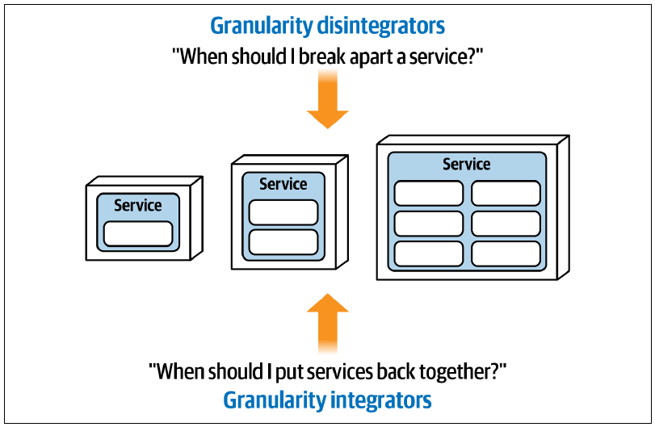
许多开发团队常犯的错误，是过度关注粒度解聚因素，却忽略聚合因素。得到合适服务粒度的秘诀，是在这两股对立力量之间实现平衡。
7.1 粒度解聚因素
粒度解聚因素为“何时应把服务拆成更小部分”提供指导和理由。拆分服务的理由可能只涉及一项驱动因素，但大多数情况下会结合多项因素。六项主要粒度解聚驱动因素如下：
- 服务范围与功能
-
服务是否承担了太多彼此无关的工作？
- 代码易变性
-
变更是否只集中在服务的某一个部分？
- 可扩展性与吞吐量
-
服务的不同部分是否需要采用不同扩展方式？
- 容错能力
-
服务内部是否存在会导致关键功能失效的错误？
- 安全性
-
服务的某些部分是否需要比其他部分更高的安全级别？
- 可延展性（Extensibility）
-
服务是否总在通过增加新上下文而扩张？
下面逐一详细讨论这些驱动因素。
7.1.1 服务范围与功能
服务范围与功能是把单一服务拆成更小服务的第一项、也是最常见的驱动因素，对微服务尤其如此。分析服务范围与功能时，需要考虑两个维度。
第一个维度是内聚性，也就是某项服务的操作彼此关联的程度与方式。第二个维度是组件的总体大小，通常通过组成服务的各个类所含语句总数、服务的公共入口数量，或同时使用两者进行衡量。
考虑一个典型“通知服务”，它负责三件事：通过短信、电子邮件或邮寄纸质信函通知客户。如图 图 7.2 所示，人们很容易想把它拆成三项单一用途服务，分别负责短信、电子邮件和纸质信函。不过，仅凭这一点还不足以支持拆分，因为现有服务具有较强内聚性：全部功能都与同一件事有关，也就是通知客户。
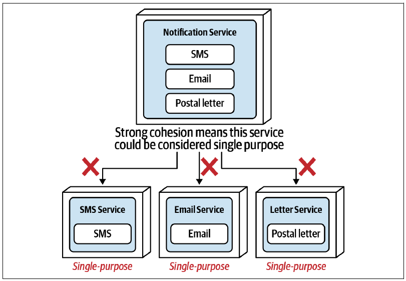
“单一用途”取决于个人意见和解释，因此很难判断是否应该拆分这项服务。
再考虑一项同时管理客户资料、客户偏好以及客户在网站上所留评论的服务。与前一个通知服务不同，这项服务的内聚性相对较弱，因为三种功能只在更宽泛的“客户”范围内有关。它可能承担了太多工作，因此大概应该拆成三项独立服务，如图 图 7.3 所示。
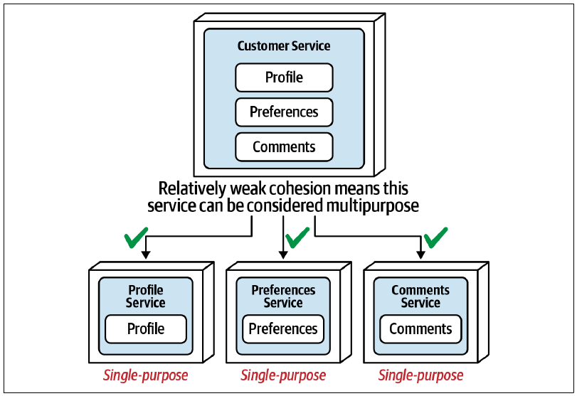
这项粒度解聚因素与 Robert C. Martin 在 SOLID 原则中提出的单一职责原则有关。该原则认为，每个类都应负责程序功能的单一部分，并把它封装起来；模块、类或函数提供的全部服务都应紧密对齐这项职责。单一职责原则最初以类为适用范围，后来逐渐扩展到组件和服务。
在微服务架构风格中，微服务被定义为单一用途、独立部署的软件单元，把一件事做到很好。难怪开发人员总想让服务尽可能小，却没有考虑为什么要这样做。
服务粒度的大多数问题，都来自对什么属于、什么不属于单一职责的主观判断。虽然 LCOM 等指标可以衡量内聚性，但应用到服务时仍然非常主观：通知客户是一件事，还是通过电子邮件通知客户才是一件事？因此，必须理解其他粒度解聚因素，才能确定合适粒度。
7.1.2 代码易变性
代码易变性，也就是源代码的变化速率，是把服务拆成更小部分的另一项有效驱动因素，也称为基于易变性的分解。客观衡量服务代码变更的频率，可以通过任何源代码版本控制系统的标准功能轻松完成，有时会为拆分服务提供充分理由。
再次考虑上一节的通知服务。仅凭服务范围，也就是内聚性，不足以支持拆分；但应用变更指标后，可以得到以下信息：
- 短信通知功能的平均变化速率：每六个月一次。
- 电子邮件通知功能的平均变化速率：每六个月一次。
- 纸质信函通知功能的平均变化速率：每周一次。
纸质信函功能平均每周变化，而短信和电子邮件功能很少变化。如果三者位于同一服务中，每次修改纸质信函代码，开发人员都必须测试并重新部署整项服务，包括短信和电子邮件功能。根据部署环境，这还可能意味着部署纸质信函变更时，短信和电子邮件功能都暂时不可用。
因此，维持单一服务会扩大测试范围并提高部署风险。如图 图 7.4 所示，把服务拆成“电子通知”和“纸质信函通知”两项服务后，频繁变更便被隔离到一项更小的服务中。测试范围显著缩小，部署风险降低，而且部署纸质信函变更时不会中断短信和电子邮件功能。
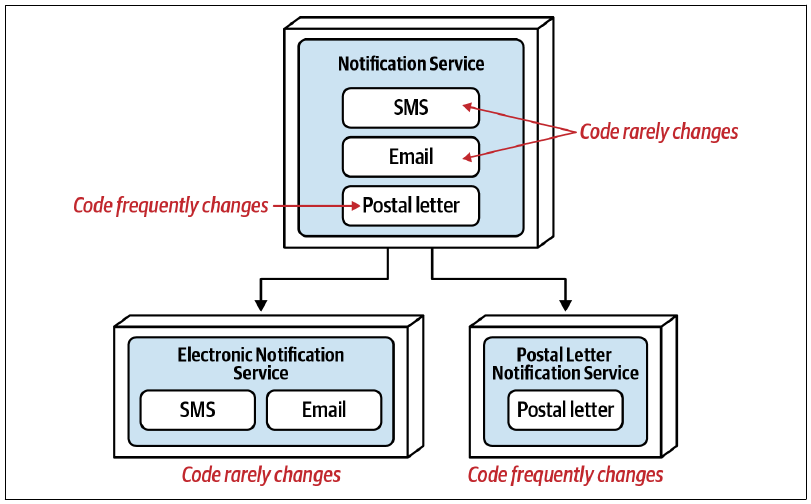
7.1.3 可扩展性与吞吐量
把服务拆成更小独立服务的另一项驱动因素，是可扩展性与吞吐量。可以客观衡量服务不同功能的扩展需求，判断是否应当拆分服务。
再次考虑同时通过短信、电子邮件和纸质信函通知客户的单一“通知服务”。衡量这项服务的扩展需求，可以得到以下数据：
- 短信通知：每分钟 220,000 条。
- 电子邮件通知：每分钟 500 封。
- 纸质信函通知：每分钟 1 封。
短信与纸质信函的发送量存在巨大差异。如果维持单一服务，电子邮件和纸质信函功能就必须无谓地扩展到满足短信需求，既增加成本，也会影响平均启动时间所代表的弹性。
如图 图 7.5 所示，把“通知服务”拆成短信、电子邮件和纸质信函三项服务后，每项服务都可以独立扩展，分别满足不同吞吐量需求。
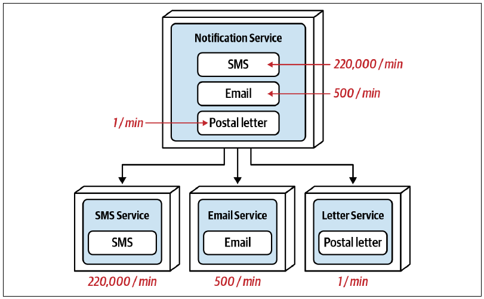
7.1.4 容错能力
容错能力描述应用或某个领域中的功能，在发生内存不足等致命崩溃后仍能继续运行的能力，也是粒度解聚的有效驱动因素。
再次考虑通过短信、电子邮件和纸质信函通知客户的合并“通知服务”。图 图 7.6 中，如果电子邮件功能持续发生内存不足并导致致命崩溃，整项服务都会停机，包括短信和纸质信函处理。
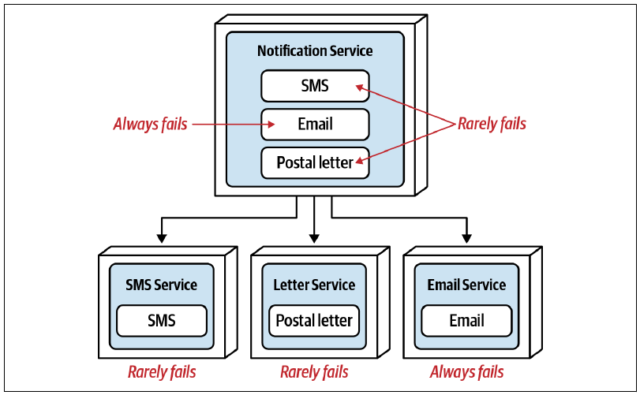
把合并通知服务拆成三项独立服务，可以为客户通知领域提供一定容错能力。电子邮件服务中的致命错误不再影响短信或纸质信函。
在这个例子中，虽然频繁崩溃的只有电子邮件功能，另外两种非常稳定，但通知服务仍被拆成短信、电子邮件和纸质信函三项服务。既然只有电子邮件有问题，为什么不把短信与纸质信函合并成一项服务？
回顾上一节的代码易变性示例。纸质信函持续变化，短信和电子邮件则不变，因此拆成两项服务很合理：纸质信函是需要隔离的问题功能，而短信和电子邮件都属于电子通知，彼此相关。
现在再看容错示例。除了都是通知客户的方式，短信与纸质信函还有什么共同点？合并后的服务应该使用什么自描述名称？把电子邮件移到独立服务会破坏整体领域内聚性，因为短信与纸质信函的内聚性很弱。可能的名称包括“电子邮件服务”与“其他通知服务”、“短信-信函通知服务”或“非电子邮件服务”，都不理想。
这个命名问题回到了“服务范围与功能”解聚因素：如果服务承担多项工作而难以命名，就应考虑继续拆分。以下方案能直观说明这一点：
- 通知服务 → 电子邮件服务、其他通知服务：名称较差。
- 通知服务 → 电子邮件服务、非电子邮件服务：名称较差。
- 通知服务 → 电子邮件服务、短信-信函服务：名称较差。
- 通知服务 → 电子邮件服务、短信服务、信函服务：名称良好。
只有最后一种方案合理，尤其是考虑未来增加社交媒体通知时：它应该放到哪里？无论依据哪项解聚驱动因素拆分服务，都要检查剩余功能能否形成强内聚。
7.1.5 安全性
保护敏感数据时，一个常见陷阱是只考虑数据存储。例如，可以把支付卡行业 PCI 数据与非 PCI 数据放在不同安全区域中的独立模式或数据库里。然而，人们有时会忽略还要保护数据的访问方式。
图 图 7.7 展示了一项“客户资料服务”，包含两项主要功能：客户资料维护，用于增加、修改或删除姓名、地址等基本资料；客户信用卡维护，用于增加、删除和更新信用卡信息。
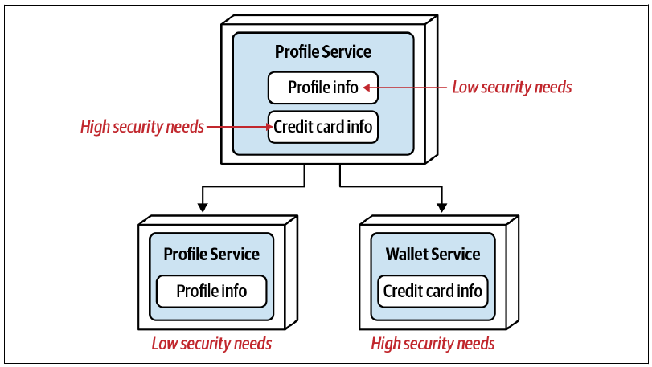
信用卡数据本身可能已经受到保护，但访问仍有风险，因为信用卡功能与基本客户资料功能合在一起。虽然进入合并客户资料服务的 API 入口不同，用户通过服务取得客户姓名时，仍有可能同时访问信用卡功能。
把服务拆成两项独立服务后，用于维护信用卡信息的操作只进入一项单一用途服务，从而可以更严格地保护信用卡功能访问。
7.1.6 可延展性
可延展性是粒度解聚的另一项主要驱动因素，指随着服务上下文增长而增加新功能的能力。考虑一项管理多种支付方式付款与退款的“支付服务”，当前支持信用卡、礼品卡和 PayPal。假设公司希望增加奖励积分、退货商店信用等内部支付方式，以及 Apple Pay、Samsung Pay 等第三方支付服务。扩展现有支付服务来增加这些方式有多容易？
当然可以继续把新方式加入单一合并服务。不过，每增加一种支付方式，都要测试整项服务，包括其他支付类型，而且所有其他支付功能都必须无谓地重新部署到生产环境。因此，单一服务会扩大测试范围、提高部署风险，使增加支付类型更加困难。
现在考虑把现有合并服务拆成信用卡处理、礼品卡处理和 PayPal 交易处理三项独立服务，如图 图 7.8 所示。
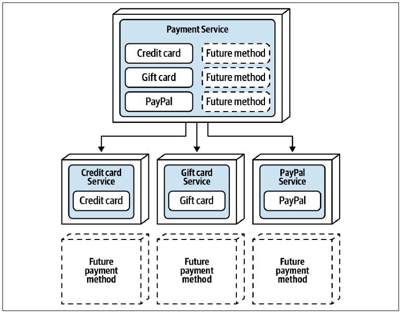
按支付方式拆分后，增加奖励积分等新方式只需要单独开发、测试和部署一项服务。开发速度更快、测试范围更小、部署风险更低。
只有在提前知道系统计划、希望或按照正常领域演进会增加更多合并上下文功能时，才应使用这项驱动因素。例如，通知方式不太可能持续扩张到短信、电子邮件和信函之外；支付处理则很可能在未来增加更多支付类型，因此为每种支付方式建立独立服务具有充分理由。
人们往往很难预测上下文功能是否以及何时扩张。因此，我们建议不要过早把可延展性作为证明粒度解聚的主要理由，而应等到出现明确模式，或者持续扩展已经得到确认。
7.2 粒度聚合因素
粒度解聚因素说明何时应把服务拆成更小的部分，粒度聚合因素则朝相反方向发挥作用：它们说明何时应把服务重新合并，或者从一开始就不应拆分。要正确确定服务粒度，关键就在于分析解聚驱动因素与聚合驱动因素之间的权衡。
粒度聚合有四项主要驱动因素：
- 数据库事务：不同服务之间是否必须使用 ACID 事务？
- 工作流与编排：服务之间是否需要相互通信？
- 共享代码：服务之间是否需要共享代码？
- 数据关系：即使服务可以拆分，它使用的数据是否也能拆分？
以下各节将详细说明这些粒度聚合驱动因素。
7.2.1 数据库事务
大多数使用关系数据库的单体系统和粗粒度领域服务，都依赖单工作单元数据库事务来维护数据完整性与一致性。关于 ACID（数据库）事务以及它与 BASE（分布式）事务的差异，参见第 9 章“分布式事务”。
为理解数据库事务如何影响服务粒度，考虑图 图 7.9 的场景：客户功能被拆成“客户资料服务”和“密码服务”，前者维护客户资料信息，后者维护密码以及其他安全相关信息和功能。
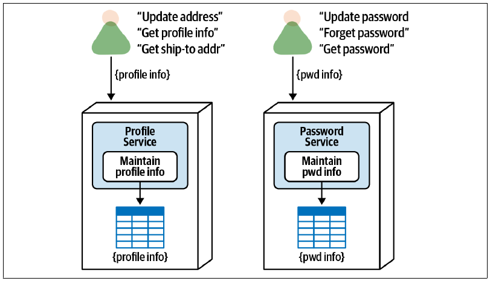
两项独立服务能在密码信息上提供良好的安全访问控制，因为访问控制位于服务级，而不是请求级。修改密码、重置密码以及登录时访问客户密码等操作都可以限制在单一服务中，因而访问权限也能被限制到这一项服务。
不过，虽然安全性是很好的解聚因素，但还要考虑图 图 7.10 所示的新客户注册操作。
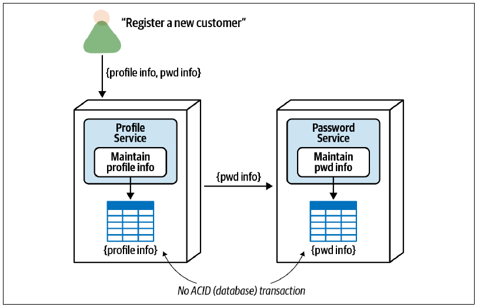
注册新客户时，用户界面会把资料和加密密码信息传给“客户资料服务”。资料服务把资料写入相应数据库表并提交，然后将加密密码信息交给“密码服务”；密码服务再把密码写入对应数据库表并提交自己的工作。
拆分服务虽然加强了密码信息的访问控制，却使注册新客户、取消订阅（删除客户）等操作失去 ACID 事务。如果密码服务在这些操作中失败，数据就会处于不一致状态，需要使用复杂且容易出错的错误处理来撤销最初的资料插入，或采取其他纠正措施。关于分布式事务中的最终一致性与错误处理，参见第 12 章“事务型 Saga 模式”。
因此，如果从业务角度看必须使用单工作单元 ACID 事务，就应把两项服务合并成图 图 7.11 所示的一项服务。
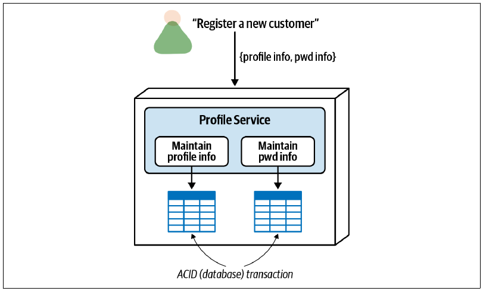
7.2.2 工作流与编排
另一项常见的粒度聚合因素是工作流与编排，也就是服务彼此通信，有时也称为服务间通信或东西向通信。在微服务等高度分布式架构中，服务间通信很常见，而且往往必不可少。然而，随着服务依据前述解聚因素走向更细粒度，服务通信量可能不断增加，直至产生负面影响。
同步服务间通信过多，首先会损害整体容错能力。考虑图 图 7.12：服务 A 与 B、C 通信，服务 B 与 C 通信，服务 D 与 E 通信，最后服务 E 又与 C 通信。此时只要服务 C 停机，其他所有服务都会因对 C 的传递依赖而无法运行，进而损害整体容错能力、可用性与可靠性。
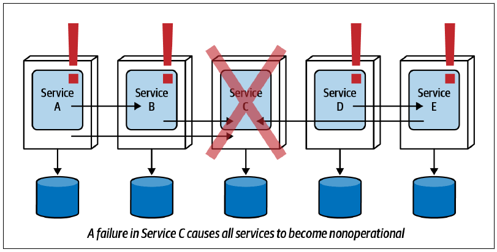
有趣的是，容错能力本来也是上一节的粒度解聚驱动因素；但如果拆开的服务仍然需要相互通信，从容错角度看其实并没有获得什么。拆分服务时，始终要检查各项功能是否紧密耦合、彼此依赖。若答案是肯定的，就无法从整个业务请求的角度获得容错收益，此时最好考虑让服务保持在一起。
整体性能与响应速度也是把服务重新合并的驱动因素。考虑图 图 7.13 的场景：一项大型客户服务被拆成 A 到 E 五项独立服务。每项服务都有自己内聚的原子请求集合，但如果要通过单一 API 请求把全部客户信息汇总到一个用户界面，使用编排就要经过五次独立调用（第 8 章将介绍使用协调来解决这一问题的替代方案）。假设每个请求的网络和安全延迟为 300 毫秒，这个请求单是延迟就会额外增加 1,500 毫秒！把这些服务合并为单一服务可以消除这部分延迟，提高整体性能与响应速度。
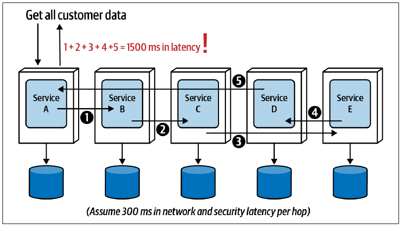
从整体性能看，这项聚合驱动因素要求在拆分服务的需要与服务相互通信所造成的性能损失之间取得平衡。一条实用经验是：同时考虑需要多项服务相互通信的请求比例，以及这些请求的重要程度。
例如，如果 30% 的请求需要服务间工作流才能完成，而 70% 都是纯原子请求，只涉及单项服务且不需要额外通信，那么保持服务分离可能没有问题。反过来，如果两项比例颠倒，就应考虑重新合并。当然，这里假设整体性能很重要；对于终端用户不必等待完成的后端功能，则有更大的余地。
还要考虑需要工作流的请求有多关键。仍以上述 30% 需要工作流、70% 为纯原子请求为例：如果那 30% 中包含一项要求极快响应的关键请求，即使 70% 都是原子请求，也可能应该重新合并服务。
服务通信增加还会影响整体可靠性和数据完整性。图 图 7.14 中，客户信息被拆到五项独立客户服务。向系统增加新客户需要协调全部五项服务，但每项服务都有自己的数据库事务。图中服务 A、B、C 已经提交了一部分客户数据，此时服务 D 却发生失败。
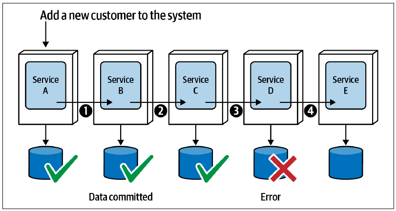
这会造成数据一致性与完整性问题，因为部分客户数据已经提交，而且其他进程可能已经读取并使用了这些信息；某项服务甚至可能已经发出消息，广播基于这些数据执行的操作。无论哪种情况，都必须通过补偿事务回滚数据，或者用特定状态标记事务中断位置，以便重新启动。这种局面非常棘手，第 12 章“事务型 Saga 模式”会详细说明。如果某项操作高度重视或必须保证数据完整性与一致性，就应考虑重新合并这些服务。
7.2.3 共享代码
共享源代码是软件开发中常见而且必要的实践。日志、安全、工具、格式化器、转换器和提取器等功能都是共享代码的典型例子。不过，在分布式架构中处理共享代码可能很复杂，有时也会影响服务粒度。
共享代码通常包含在共享库中，例如 Java 生态系统的 JAR、Ruby 环境的 GEM 或 .NET 环境的 DLL，并且一般在编译时绑定到服务。第 8 章将深入介绍代码复用模式；这里仅说明共享代码有时如何影响服务粒度，成为把服务重新合并的因素。
考虑图 图 7.15 中的五项服务。尽管可能有充分的解聚驱动因素支持拆分，它们却共享一套领域功能代码库，而不是普通工具或基础设施功能。如果共享库发生变更，最终就必须修改使用它的服务。这里说“最终”，是因为有时可以通过共享库版本控制获得敏捷性与向后兼容性，详见第 8 章。结果是所有独立部署的服务都必须一起修改、测试和部署。此时，为避免多次部署以及因使用不同库版本导致服务功能不同步，最好把五项服务合并为一项。
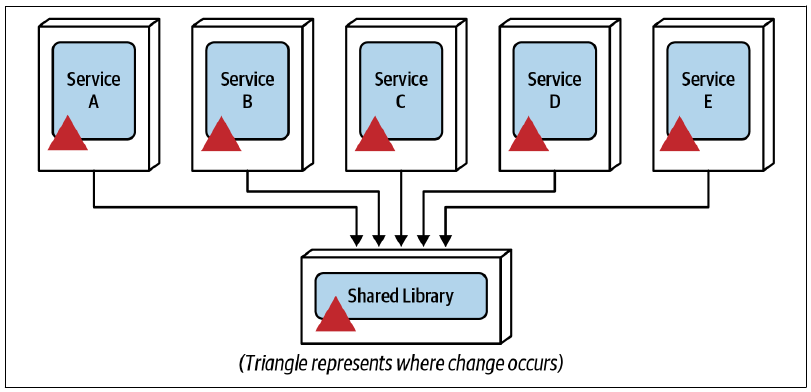
并非所有共享代码都会驱动粒度聚合。例如，日志、审计、身份认证、授权和监控等所有服务都会使用的基础设施横切功能，并不是重新合并服务，甚至退回单体架构的充分理由。把共享代码视为粒度聚合因素时，可以参考以下准则：
特定的共享领域功能
共享领域功能是包含业务逻辑的共享代码，不同于基础设施相关的横切功能。如果共享领域代码占比较高，建议把这项因素视为潜在的粒度聚合因素。假设一组客户相关功能（资料维护、偏好维护、增加或删除评论）的公共共享代码超过总体代码库的 40%，那么把这些功能拆成不同服务，意味着将近一半的源代码都位于仅供这三项服务使用的共享库里。此时最好考虑将客户相关功能和共享代码一起保留在一项合并服务中，特别是共享代码还经常变化时。
共享代码频繁变化
无论共享库大小如何，共享功能频繁变化都会要求使用这些领域功能的服务频繁进行协调变更。版本控制有时可以缓解协调变更，但使用共享功能的服务最终仍要采用最新版本。如果共享代码经常变化，可以考虑合并使用它的服务，从而减轻协调多个部署单元变更的复杂度。
无法通过版本控制隔离的缺陷
版本控制能够减少协调变更，并支持向后兼容与敏捷性，也就是快速响应变化的能力。但有时某项业务功能必须同时应用到所有服务，例如缺陷修复或业务规则变更。如果这种情况经常发生，就该考虑重新合并服务，简化变更。
7.2.4 数据关系
在粒度解聚与聚合之间做权衡时，还要比较单一合并服务所用数据与拆分后各项服务所用数据之间的关系。这里假设服务拆分后的数据不共享，而是在每项服务内部形成紧密的限界上下文，以便控制变更并支持整体可用性与可靠性。
图 图 7.16 中，单一合并服务包含 A、B、C 三项功能及其对应的数据表关系。指向表的实线表示写入，也就是数据所有权；从表指出的虚线表示只读访问。把功能映射到数据表后会得到表 表格 7.1，其中“所有者”表示写入和相应读取，“访问”表示只读访问不属于该功能的数据表。
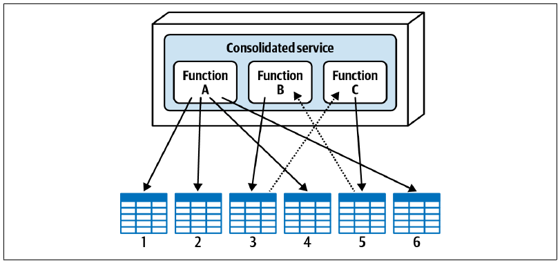
| 功能 | 表 1 | 表 2 | 表 3 | 表 4 | 表 5 | 表 6 |
|---|---|---|---|---|---|---|
| A | 所有者 | 所有者 | 所有者 | 所有者 | ||
| B | 所有者 | 访问 | ||||
| C | 访问 | 所有者 |
假设依据上一节的某些解聚驱动因素，把这项服务拆成三项独立服务，每项对应合并服务中的一项功能，如图 图 7.17 所示。拆开之后，相应数据表也必须与每项服务建立限界上下文。
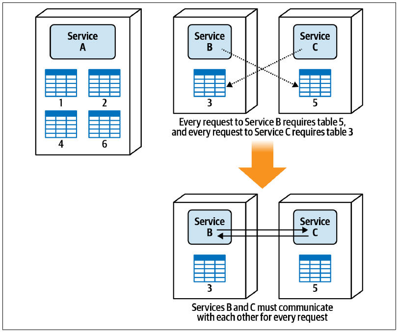
图上半部分显示：服务 A 在自己的限界上下文中拥有表 1、2、4、6；服务 B 拥有表 3；服务 C 拥有表 5。然而，服务 B 的每项操作都需要访问服务 C 所拥有的表 5，而服务 C 的每项操作又需要访问服务 B 所拥有的表 3。由于限界上下文的存在，服务 B 不能直接查询表 5，服务 C 也不能直接查询表 3。
为理解限界上下文以及服务 C 不能直接访问表 3 的原因，假设拥有表 3 的服务 B 决定修改业务规则，因此需要删除表 3 中的一列。这项变更会破坏服务 C 以及使用表 3 的所有其他服务。这正是限界上下文概念在微服务等高度分布式架构中如此重要的原因。
为解决这一问题，服务 B 必须向服务 C 请求其数据，服务 C 也必须向服务 B 请求其数据，形成图 图 7.17 下半部分所示的往返服务间通信。鉴于服务 B 与 C 之间的数据依赖，最好把它们合并为一项服务，避免服务间通信带来的延迟、容错能力与可扩展性问题。这说明数据表关系也会影响服务粒度。
我们把这项驱动因素放到最后，是因为它的权衡通常最少。虽然从单体系统迁移时偶尔需要重构数据组织方式，但在大多数情况下，仅仅为了拆分服务而重组数据库表的实体关系并不可行。第 6 章已经深入介绍了如何拆分数据。
7.3 找到正确平衡
找到正确的服务粒度很难。真正的诀窍是同时理解粒度解聚因素（何时拆分服务）与粒度聚合因素（何时重新合并），并分析两者之间的权衡。前述场景表明，架构师不仅要识别权衡，还必须与业务干系人密切协作，共同分析并为服务粒度选择合适方案。
表 表格 7.2 和表 表格 7.3 汇总了解聚与聚合驱动因素。
| 解聚驱动因素 | 应用理由 |
|---|---|
| 服务范围 | 单一用途服务，具有强内聚性 |
| 代码易变性 | 敏捷性（缩小测试范围并降低部署风险） |
| 可扩展性 | 降低成本并提高响应速度 |
| 容错能力 | 提高整体正常运行时间 |
| 安全访问 | 加强对特定功能的安全访问控制 |
| 可延展性 | 敏捷性（易于增加新功能） |
| 聚合驱动因素 | 应用理由 |
|---|---|
| 数据库事务 | 数据完整性与一致性 |
| 工作流 | 容错能力、性能与可靠性 |
| 共享代码 | 可维护性 |
| 数据关系 | 数据完整性与正确性 |
架构师可以使用这些驱动因素构建权衡陈述，再与产品负责人或业务发起人协作讨论并解决。
示例 1
架构师：“我们希望拆分服务，隔离频繁的代码变更，但这样就无法维持数据库事务。按照业务需要，哪一项更重要：更好的整体敏捷性（可维护性、可测试性和可部署性），从而加快上市速度；还是更强的数据完整性与一致性？”
项目发起人：“按照业务需要，我宁愿牺牲一点上市速度来换取更好的数据完整性与一致性，所以目前先保持单一服务。”
示例 2
架构师：“为了在两项操作之间支持数据库事务并保证数据一致性，我们需要让服务保持合并，但这意味着单一合并服务中的敏感功能会降低安全性。按照业务需要，哪一项更重要：更好的数据一致性，还是更好的安全性？”
项目发起人：“我们的 CIO 在安全与敏感数据保护方面经历过一些棘手情况，因此安全问题是他们最关心的事情，也几乎出现在每次讨论中。这里保护敏感数据更重要，所以让服务保持分离，再设法缓解数据一致性问题。”
示例 3
架构师：“为了更容易增加新支付方式，我们需要拆分支付服务，但这会增加工作流；而一张订单使用多种支付方式时，响应速度会受到影响，这种情况又经常发生。按照业务需要，哪一项更重要：提高支付处理的可延展性，从而获得更好的敏捷性与上市速度；还是提高付款响应速度？”
项目发起人：“未来几年我认为只会再增加两三种支付类型。既然客户必须等到支付处理完成后才能拿到订单编号，我宁愿把重点放在整体响应速度上。”
7.4 Sysops Squad 案例：工单分配粒度
10 月 25 日，星期一，11:08
客户创建故障工单且系统接受后，必须根据技能、位置与可用性把它分配给一位 Sysops Squad 专家。工单分配包括两个主要组件：“工单分配”组件负责决定把工作交给哪位顾问；“工单路由”组件负责定位该专家，通过定制的 Sysops Squad 移动应用把工单发到其移动设备，并以短信通知专家有新工单。
开发团队难以决定这两个组件应该实现为单一合并服务，还是图 图 7.18 所示的两项独立服务，于是请架构师 Addison 帮助选择方案。
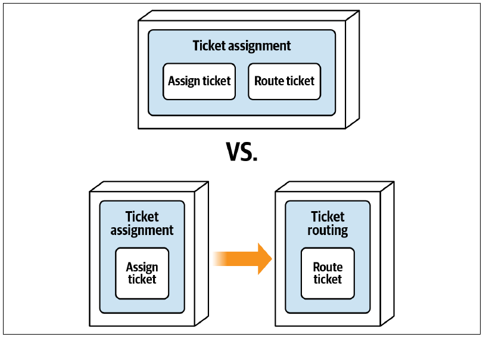
“你看，”Taylen 说，“工单分配算法非常复杂，因此应该与工单路由功能隔离。这样算法改变时，我就不必担心全部路由功能。”
“但分配算法到底多常变化？”Addison 问，“我们预计未来又会变化多少？”
“我每月至少要改两三次。我读过基于易变性的分解，这个场景完全符合。”Taylen 说。
“但如果把分配和路由拆成两项服务，它们就必须持续通信，”Skyler 说，“而且，分配与路由其实是一项功能，不是两项。”
“不，”Taylen 说，“它们是两项独立功能。”
“等一下，”Addison 说，“我明白 Skyler 的意思。想一想：只要找到能在规定时间内处理工单的专家，工单就会立即路由给他。如果没有专家可用，工单会回到队列，等待找到合适的人。”
“对，就是这样。”Taylen 说。
“看吧，”Skyler 说，“不把工单路由给专家，就不能完成分配，所以两项功能其实是一项。”
“不、不、不，”Taylen 说，“你不明白。如果发现某位专家能在规定时间内处理，就把工单分配给他。就这么简单。路由只是传输问题。”
“如果当前功能无法把工单路由给专家，会怎样？”Addison 问。
“那就选择另一位专家。”Taylen 说。
“好，那仔细想想，”Addison 说，“如果分配和路由是两项独立服务，路由服务就必须回头通知分配服务，说无法找到这位专家，需要另选一人。两项服务之间会有大量协调。”
“是，但它们仍然是两项独立功能，不像 Skyler 说的是一项。”Taylen 说。
“我有个想法，”Addison 说，“我们能不能一致承认：分配和路由是两项不同活动，却以同步方式紧密绑定，也就是任何一项都不能脱离另一项存在？”
“可以。”Taylen 和 Skyler 同时回答。
“既然这样，”Addison 说，“我们来分析权衡。哪一项更重要：为了控制变更而隔离分配功能；还是把分配与路由合并为一项服务，以获得更好的性能、错误处理和工作流控制？”
“这样说的话，”Taylen 说，“显然应该用单一服务。但我还是希望隔离分配代码。”
“好，”Addison 说，“那就在单一服务中创建三个不同的架构组件。我们可以在代码里用独立命名空间区分分配、路由与共享代码。这样有帮助吗？”
“有，”Taylen 说，“可行。好吧，你们俩赢了，我们就用单一服务。”
“Taylen，”Addison 说，“这不是谁输谁赢，而是分析权衡，找出最合适的方案，仅此而已。”
大家同意为分配和路由使用单一服务后，Addison 写下了这份架构决策记录：
背景
系统创建并接受工单后，必须把它分配给专家，再路由到专家的移动设备。可以通过单一合并的工单分配服务完成，也可以分别建立工单分配与工单路由服务。
决策
我们将为工单分配与路由功能创建单一合并的工单分配服务。
工单一经分配就会立即路由给 Sysops Squad 专家，因此两项操作紧密绑定、彼此依赖。
两项功能必须以相同方式扩展，吞吐量需求没有差异，两者之间也不需要背压。
两项功能完全相互依赖，因此容错能力不是拆分它们的驱动因素。
如果把它们做成独立服务，就需要建立服务间工作流，带来性能、容错能力以及潜在可靠性问题。
后果
分配算法经常改变，而路由机制很少改变；无论哪一项发生变更，都必须测试并部署两项功能，从而扩大测试范围并提高部署风险。
7.5 Sysops Squad 案例：客户注册粒度
1 月 14 日，星期五，13:15
客户必须注册才能使用 Sysops Squad 支持计划。注册时要提供资料信息（姓名、地址、企业名称等）、每月扣款的信用卡信息、密码与安全问题信息，以及希望纳入支持计划的已购产品清单。
部分开发人员坚持应建立一项包含全部客户信息的合并“客户服务”；另一些人认为每项功能都应有独立服务，包括“资料服务”“信用卡服务”“密码服务”和“受支持产品服务”。具有 PCI 和 PII 数据经验的 Skyler 则认为，信用卡与密码信息应和其余信息分离，因此主张建立两项服务：包含资料与产品信息的“资料服务”，以及包含信用卡与密码信息的“客户安全服务”。图 图 7.19 展示了这三种方案。
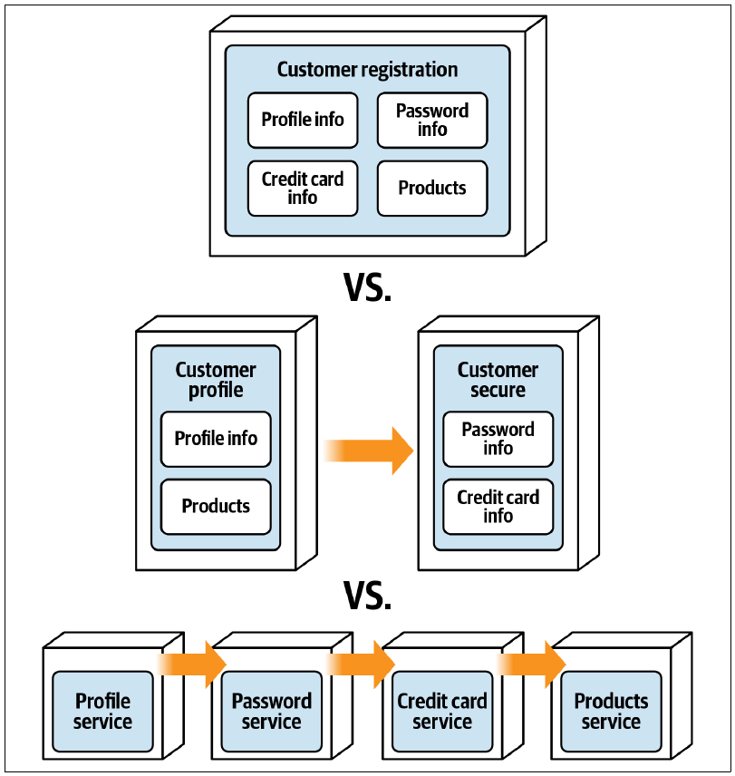
Addison 忙于核心工单功能，开发团队便请 Austen 帮助解决粒度问题。Austen 预料这不会是个轻松决定，特别是其中涉及安全，于是安排产品负责人 Parker 和 Penultimate Electronics 的安全专家 Sam 一起讨论。
“好，需要我们做什么？”Parker 问。
“我们正在纠结应该建立多少项服务来注册客户和维护客户相关信息，”Austen 说，“这里主要处理四类数据：资料、信用卡、密码和已购产品信息。”
“哇，先停一下，”Sam 打断说，“你们知道信用卡和密码信息必须受到保护吧？”
“当然知道，”Austen 说，“问题在于后端只有一个客户注册 API。如果建立独立服务，注册客户时就必须协调所有服务，因而需要分布式事务。”
“什么意思？”Parker 问。
“我们无法把全部数据作为一个原子工作单元同步处理。”Austen 说。
“那不可接受，”Parker 说，“客户信息要么全部写入数据库，要么一条也不写。换种说法：绝对不能出现有客户记录却没有对应信用卡或密码记录的情况，一次都不行。”
“但信用卡和密码信息的安全怎么办？”Sam 问，“依我看，独立服务能对这类敏感信息提供好得多的安全访问控制。”
“我可能有办法了，”Austen 说，“信用卡信息在数据库中已经令牌化了，对吧？”
“既令牌化，也加密了。”Sam 说。
“很好。密码信息呢？”Austen 问。
“一样。”Sam 说。
“那么，”Austen 说，“真正需要关注的，似乎是把密码和信用卡信息的访问，与取得、更新资料等其他客户请求分开控制。”
“我想我明白你的难题了，”Parker 说，“如果把全部功能拆成独立服务，就能更好地保护敏感数据访问，却无法保证我要求的全有或全无。对吗？”
“完全正确，这就是权衡。”Austen 说。
“等一下，”Sam 说，“你们是否使用 Tortoise 安全库来保护 API 调用？”
“是的。我们不仅在 API 层使用，还在每项服务内部通过服务网格控制访问，实际上形成双重检查。”Austen 说。
“嗯，”Sam 说，“只要使用 Tortoise 安全框架，我可以接受单一服务。”
“我也可以，只要仍能实现全有或全无的客户注册流程。”Parker 说。
“看来大家都同意：全有或全无的客户注册是绝对要求，同时用 Tortoise 维持多级安全访问。”Austen 说。
“同意。”Parker 说。
“同意。”Sam 说。
Parker 注意到，Austen 通过促进对话而不是控制对话来主持会议。对架构师而言，这是识别、理解和协商权衡的重要一课。Parker 也更好地理解了设计与架构之间的区别：安全既可以通过设计来控制，例如使用带特殊加密的定制库，也可以通过架构来控制，例如把功能拆成独立部署单元。
根据与 Parker 和 Sam 的讨论，Austen 决定通过单一合并领域服务管理客户相关功能，而不是使用独立部署的服务，并写下这份 ADR：
背景
客户必须注册才能使用 Sysops Squad 支持计划。注册时要提供资料、信用卡、密码和已购产品信息。可以建立单一合并客户服务，为每项功能建立独立服务，或者分别为敏感与非敏感数据建立服务。
决策
我们将为资料、信用卡、密码和受支持产品建立单一合并客户服务。
客户注册与取消订阅功能要求使用单一原子工作单元。单一服务可以使用 ACID 事务满足要求，独立服务则不能。
在 API 层和服务网格中使用 Tortoise 安全库，可以降低敏感信息的安全访问风险。
后果
必须使用 Tortoise 安全库，同时保护 API 网关与服务网格中的访问。
由于采用单一服务，资料、信用卡、密码或已购产品的源代码发生变更时，测试范围和部署风险都会增加。
合并后的资料、信用卡、密码与已购产品功能必须作为一个整体扩展。
与产品负责人和安全专家讨论的权衡是事务性与安全性。把客户功能拆成独立服务可以提供更好的安全访问控制，却无法支持客户注册或取消订阅所要求的“全有或全无”数据库事务。不过，使用定制的 Tortoise 安全库可以缓解安全顾虑。